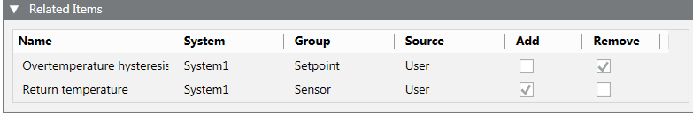
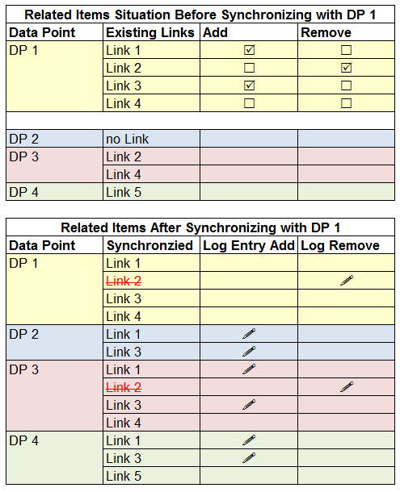
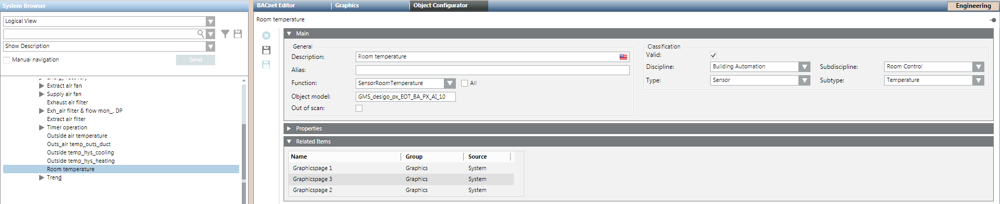
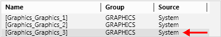
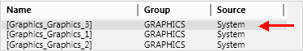

Configuring Related Items
The Related Items tab in the Contextual pane provides links to additional objects or applications that are relevant to the current selection. The following procedures provide instructions on how to associate objects so they display as related items.
Associate Related Items to an Object
- In System Browser, select the object for which you want to configure related items.
For example, Project > Field Networks > [network] > Hardware > [device] > [data point]. - In the Object Configurator tab, open the Related Items expander.
- Select the Manual navigation check box.
- In System Browser, locate the object you want to associate and drag
 it into the Related Items expander.
it into the Related Items expander. - Repeat step 4 for all the other objects you want to appear as related item links.
- Click Save
 .
.
- When you select the object configured in step 1, the objects associated in step 4 appear as related items links in the Contextual pane.
Synchronize Related Items
To save time, you can apply the same related items configuration to multiple objects at once.
- You have associated one or more related items to an object. Now you want to apply this configuration to multiple other objects.
- (Optional) Perform a filter search for a particular type of data point. See the Bulk Engineering section.
- In System Browser, select the object whose related items you want to copy.
- In the Object Configurator tab, open the Related Items expander.
- The expander displays the related items of the selected object. This is the configuration that will be applied to the other objects.
- With the CTRL or SHIFT key pressed, in System Browser make a multi-selection of all the other objects you want to synchronize with the first one.
- Release the CTRL or SHIFT key.
- In the Related Items expander, the Add and Remove columns display next to each related item of the first object.

- Select the Add or Remove check box alongside each link.
- The links you choose to Add will be added to the related items of all the selected objects.
- The links you choose to Remove will be removed from the related items of all the selected objects, including the first one.
- Any other related items links of the selected objects not listed here remain unaffected.
- Click Save .
- The related items of the objects are updated.
- Any changes to the related items are logged (in the example =!).
Example

Prioritize Related Items
If an object is referenced in multiple graphics, documents, reports, or trends, you can set which one will be opened first within each group. Note that prioritizing works within each group of applications.
The following description refers to prioritizing graphics pages.

- An object is referenced in multiple graphic pages.
- In System Browser, select the object in question.
For example, Project > Field Networks > [network] > Hardware > [device] > [data point]. - Select the Object Configurator tab.
- In the Related Items expander, highlight the graphics page you want to open first.

- Drag that graphics page to the top of the list.

- Click Save .
- The graphics page defined at the top of the list opens.

The order must be set for each data point, if multiple data points are referenced on the graphics page.
Remove Related Items from an Object
- In System Browser, select the object in question.
For example, Project > Field Networks > [network] > Hardware > [device] > [data point]. - In the Object Configurator tab, open the Related Items expander.
- Right-click on the item you want to remove and click Delete item link.
- Click Save .